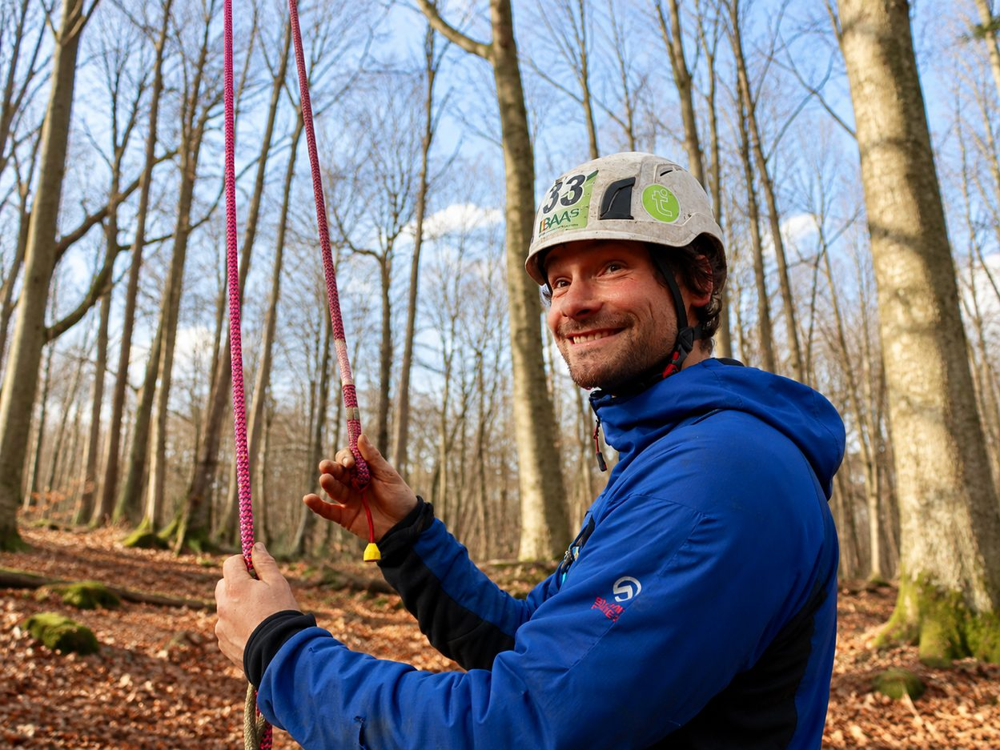

Vrijblijvend een offerte aanvragen, een vraag stellen of polsen of Lode in uw gemeente actief is — het kan allemaal.

Vul het formulier in en Lode neemt zo snel mogelijk contact met u op.
Uw gegevens worden enkel gebruikt voor deze aanvraag